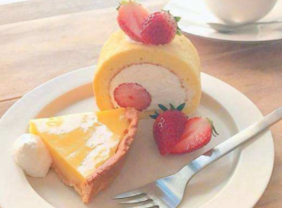
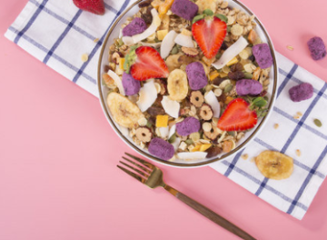

朋友圈晒美食的说说句子 微信分享美食的一句话配文
作者:网友整理 人气:0导读： 吃美食分享美食，能给我们带来幸福感和满足感。特别是现在人喜欢在晒朋友圈，吃吃喝喝都想要记录下。所以分享一些晒美食的可爱句子。
1.人生就是要吃吃吃！穿穿穿！
2.沉醉在美食的海洋里，无法自拔。
3.吃或者不吃，肉肉都会长，那还是吃吧。
4.注重精神食粮的人一般也会注重自己的食粮
5.这辈子唯一拿得起放不下的就是筷子了
6.只有吃东西的时候，才会感觉自己是最幸福的人。
7.我的梦想是住在食家庄，日日食全食美，夜夜碟碟不休
8.爱情和美食，我当然选择美食拉，男友又不能当饭吃。
9.识食物者为俊杰

10.你的吃相是最美的模样
11.没有喝不完的奶茶 只有过不去的过去
12.当吃货挺好的，吃着吃着什么都忘了。
13.不辜负在最好的时光里，遇见美食的精致
14.没有什么是一顿饭解决不了的问题，如果有，那就是两顿
15.天要我胖，不得不胖
16.恋爱可以慢慢谈，肉必须趁热吃
17.在吃货的这条不归路上，人类，从来都不孤单!
18.我有一颗减肥的心，奈何我有一张吃货的嘴。
19.曾经沧海难为水，鱼香肉丝配鸡腿

20.又不赚走秀那份钱，干嘛吃超模那份苦。
21.让我们红尘作伴，吃的白白胖胖
22.我一不高兴就喜欢吃东西，一吃东西就发胖，一发胖我就很不高兴。
23.吃货的最高境界：眼见为食！
24.请带上128个G的胃跟我去浪迹天涯，四海为家
25.对吃货来说，这世上唯一不能吃的就是亏。
26.不开心睡一觉，就让它过去吧。伤心还好，伤胃就不好了。
27.我承受了这个年纪不该有的饭量
28.天天都想着减肥的人偏偏生了一张吃货的嘴。
29.世界上最惨的事莫过于一个吃货有胃病。
30. 祖国尚未统一，减肥改日再议
31.天下没有不散的宴席 但是如果你请客
32.多年前你一句保重 我至今没瘦
33.吃想吃的美食 去想去的地方
加载全部内容
 公开恋情的超甜语录 2021最新版的公布恋情文案
公开恋情的超甜语录 2021最新版的公布恋情文案 能感动男朋友很撩人的一句话 适合跟男生的表白句子
能感动男朋友很撩人的一句话 适合跟男生的表白句子 很皮很有趣可以做快乐源泉的句子 让人心情变好的欢乐文案
很皮很有趣可以做快乐源泉的句子 让人心情变好的欢乐文案 电影你的婚礼催泪台词 2021最扎心的电影台词
电影你的婚礼催泪台词 2021最扎心的电影台词 夏天晚上的唯美心情说说 2021关于夏季夜晚的心情句子
夏天晚上的唯美心情说说 2021关于夏季夜晚的心情句子 可爱又特别撩的朋友圈小句子 朋友圈含蓄撩人的话
可爱又特别撩的朋友圈小句子 朋友圈含蓄撩人的话